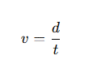
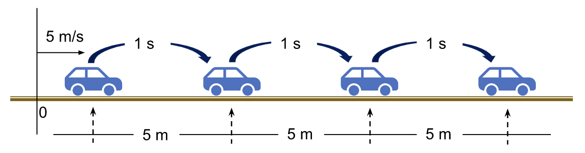
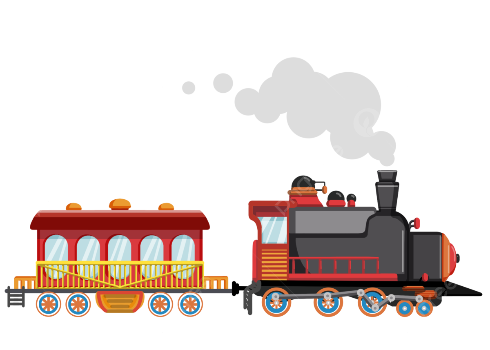

El Movimiento Rectilíneo Uniforme describe objetos que se mueven en línea recta a velocidad constante, sin aceleración.


Fig. 8: Auto avanzando en línea recta, las flechas muestran que siempre recorre la misma distancia cada segundo.
Ejemplo:
Un tren recorre 180 km en 3 horas.
v=180÷3=60v = 180 ÷ 3 = 60v=180÷3=60 km/h.

Fig. 9: Tren avanzando hacia adelante